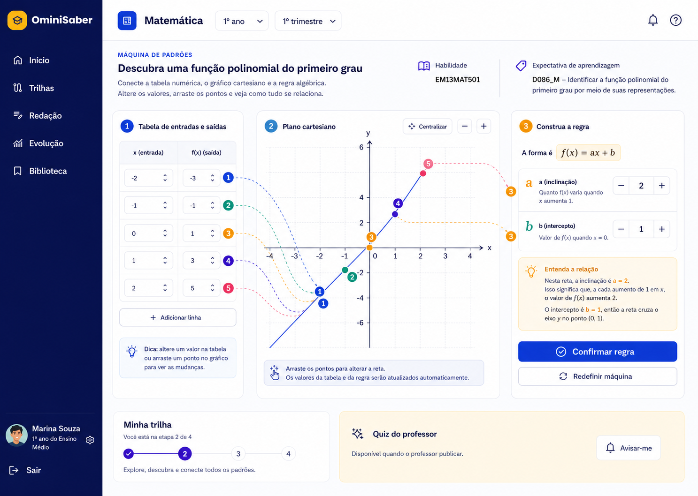
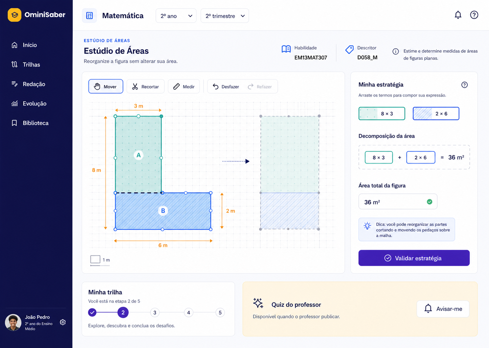
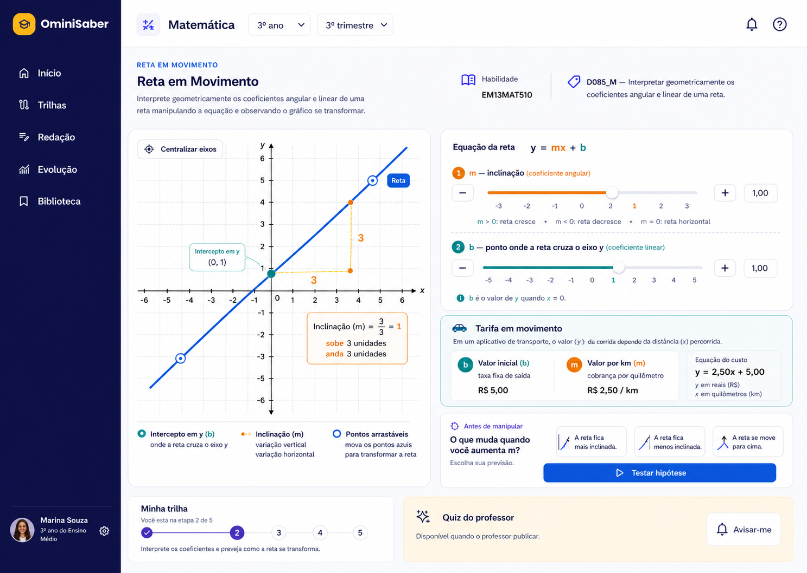

1º ano · 1º trimestreEM13MAT501D086_M
Máquina de Padrões
Conecte tabela, gráfico e expressão para descobrir a regra de uma função do 1º grau.
Laboratórios por descritor
Três experiências transformam números, formas e funções em objetos que você pode manipular.
BNCC e descritores

1º ano · 1º trimestreConecte tabela, gráfico e expressão para descobrir a regra de uma função do 1º grau.

2º ano · 2º trimestreRecorte, mova e reorganize figuras para justificar a área de regiões compostas.

3º ano · 3º trimestreManipule m e b para entender como os coeficientes transformam uma reta.
Nenhuma experiência disponível para este filtro.
Conectado ao professor de Matemática
Consultando o Supabase...